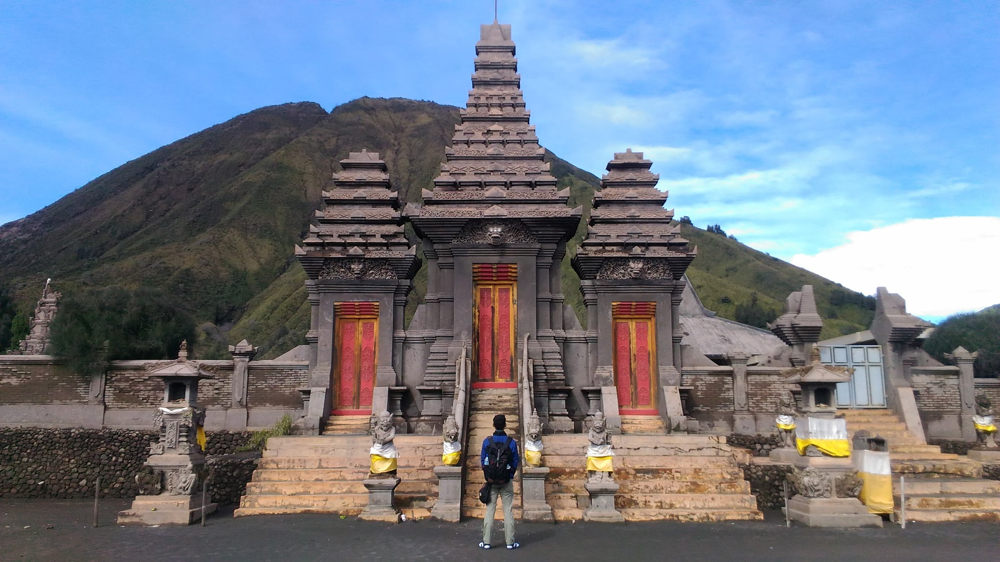

Sejarah
Gunung Bromo atau dalam bahasa Tengger dieja "Brama", juga disebut Kaldera Tengger, adalah sebuah gunung berapi aktif di
Jawa Timur, Indonesia. Gunung ini memiliki ketinggian 2.329 meter di atas permukaan laut dan berada dalam empat wilayah
kabupaten, yakni Kabupaten Probolinggo, Kabupaten Pasuruan, Kabupaten Lumajang, dan Kabupaten Malang. Gunung Bromo terkenal
sebagai objek wisata utama di Jawa Timur. Sebagai sebuah objek wisata, Bromo menjadi menarik karena statusnya sebagai gunung
berapi yang masih aktif. Gunung Bromo termasuk dalam kawasan Taman Nasional Bromo Tengger Semeru. Nama Bromo berasal dari nama dewa utama dalam agama Hindu, Brahma. Bentuk tubuh Gunung Bromo bertautan antara lembah dan ngarai dengan kaldera atau lautan pasir seluas sekitar 10 kilometer
persegi, Ia mempunyai sebuah kawah dengan garis tengah ± 800 meter (utara-selatan) dan ± 600 meter (timur-barat).
Sedangkan daerah bahayanya berupa lingkaran dengan jari-jari 4 km dari pusat kawah Bromo.
Objek Wisata
Bromo sudah terkenal tidak hanya di dalam negeri saja, bahkan sampai ke luar negeri. Keindahan alam yang ditawarkan oleh kawasan
Gunung Bromo merupakan paket lengkap wisata alam pegunungan, dimana kamu bisa menikmati berbagai pengalaman. Tidak hanya mendapatkan pemandangan gunung biasa, kamu akan disuguhkan dengan berbagai bentuk alam dan budaya.
Tentunya saat berkunjung ke Bromo, kamu tidak ingin melewatkan satu spot pun karena keindahannya memang tiada tara. Tempat wisata di Bromo terdiri dari beragam keindahan alam khas pegunungan. Kamu bisa melihat perbukitan yang menghijau dengan
rumput savana, atau mengelilingi lautan pasir, hingga menikmati sunrise dari puncak gunung yang menakjubkan. Berikut rangkum dari berbagai sumber tentang tempat wisata di bromo
Kawah Bromo
Kawah Bromo yang begitu memesona. Untuk mencapainya,
kamu hanya perlu berjalan kaki sekitar 2 km dari area parkir. Jika kamu malas berjalan kaki, kamu juga bisa menyewa kuda.
Setelah itu, kamu tinggal menaiki anak tangga yang mencapai puncak kawah bromo.
Bukit Teletubbies Bromo
Bukit teletubbies bromo menjadi salah satu tempat favorit bagi banyak wisatawam.
Selain bisa menikmati kecantikan gunung Bromo dengan deretan bukit hijau, area ini juga menjadi spot foto terbaik.
Bukitnya dipenuhi dengan rerumputan hijau yang sangat cantik. Bahkan rumput di sini sangat terjaga sehingga nampak begitu
rapi. Jadi, saat berkunjung ke kawasan Bromo Tengger, maka jangan lewatkan untuk berkunjung ke sini.
Pura Luhur Poten

Tempat wisata di Bromo ini memang cukup unik. Jika sebelumnya Wisata Bromo dipenuhi dengan keindahan alam,
sekarang kamu juga bisa menemui tempat ibadah, yaitu Pura Luhur Poten. Pura di sini merupakan tempat ibadah warga
sekitar yang memeluk agama Hindu.
B 29 Argosari
B 29 Argosari merupakan salah satu spot camping favorit di Bromo. Destinasi wisata yang satu ini memang cukup
asing bagi pengunjung Bromo. Tempat ini merupakan puncak yang paling tinggi di kawasan Wisata Gunung Bromo, lebih
tinggi dari penajakan 1. Letak dari wisata ini berada di daerah desa Argosari, kec. Senduro kira-kira 40 Km dari kota Lumajang.
Untuk menuju ke B 29 ini akses termudah adalah melalui Senduro Lumajang, jalur selatan.
Pananjakan 1 dan 2
,Penanjakan 1 dan 2 merupakan lokasi terbaik untuk menyaksikan matahari terbit. Lokasi ini merupakan yang paling
tinggi di antara bukit lainnya. Di sini kamu bisa langsung menyaksikan kecantikan sunrise di pagi buta dengan keindahan
lembah yang masih tertutup kabut.
Atraksi
Taman Nasional Bromo Tengger Semeru ini memang punya pemandangan dan suasana yang menakjubkan karena hamparan kawah
yang luas serta kabut yang menyejukkan. Bersama dengan padang pasir yang lapang, bukit-bukit yang mudah didaki,
suhu di puncak yang dingin dan sejuk, tentu membuat banyak wisatawan berbondong-bondong mengunjungi tempat ini.
Area wisata yang membentang seluas 800 kilometer persegi membuatnya sangat disayangkan kalau cuman berfoto ria saja.
Lantas, apa saja sih kegiatan yang dapat dilakukan di kawasan Bromo Tengger Semeru?
Berpetualang Naik Mobil Jip
Kawasan Bromo Tengger Semeru menyediakan layanan berkendara mobil jip ke bagian-bagian kawasan seperti: Bukit Cinta, Widodaren, Kawah Bromo, Pasir Berbisik,
dan Sabana. Dengan mobil jip yang mampu melintasi berbagai jalur terjal, wisatawan bisa merasakan langsung berkendara sambil
menikmati pemandangan alam yang luas dan menakjubkan. Sobat Pesona tidak perlu khawatir apabila tidak bisa mengendarai jip,
karena akan ada operator yang siap menyupiri dan memandu jalur yang aman dilewati. Kisaran harga sewa mobil jip mulai dari
Rp 600.000,- hingga Rp 1.250.000,- namun harga ini bisa berubah sewaktu-waktu.
Berkuda
Selain berkendara dengan mobil jip, wisatawana juga dapat merasakan asiknya berkuda di kawasan dari parkiran kendaraan ke kawasan kawah gunung bromo. Biaya untuk menyewa kuda
adalah Rp 150.000,- untuk dapat diantarkan ke kawasan kawah dan kembali diantarkan ke parkiran.
Perizinan

Untuk dapat memasuki kawasan Taman Nasional Bromo Tengger Semeru wisatawan tidak dapat sembarangan datang ke kawasan wisata.
wisatawan harus melakukan registrasi secara on-line terlebih dahulu. Disarankan untuk melakukan registrasi tidak dilakukan pada hari kunjungan,
dikarenakan jumlah wisatawan yang masuk per harinya dibatasi.
Registrasi online dapat dilakukan di https://bookingbromo.bromotenggersemeru.org/